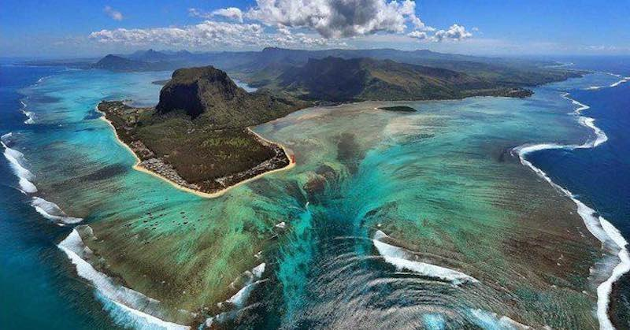

Мадагаскар
Это четвёртый по величине остров в мире, расположенный в Индийском океане, у восточного побережья Африки. Остров славится своим уникальным биоразнообразием: около 90% флоры и фауны являются эндемичными и не встречаются больше нигде на Земле.
География
Площадь острова составляет около 587 041 км². Мадагаскар разделён на несколько климатических зон, от тропических лесов на востоке до пустынь на юге. Самая высокая точка - гора Бараха, около 2 876 м.
Население и культура
На Мадагаскаре проживает около 27 миллионов человек. Основное население - малгаши, которые имеют своё уникальное языковое и культурное наследие. На острове сочетаются разные традиции, включая влияние африканских, азиатских и европейских культут. Основные языки - малагасийский и французский.
Экономика
Экономика основана на сельском хозяйстве, рыболовстве и туризме. Основные экспортные товары - ваниль, кофе, экспортные товары. Однако, страна сталкивается с проблемами бедности и экологического разрушения.
Туризм
Мадагаскар привлекает туристов уникальными заповедниками, такими как Национальный парк Раномафана и Андохала. Здесь можно увидеть лемуров, баобабы и другие редкие виды растений и животных.